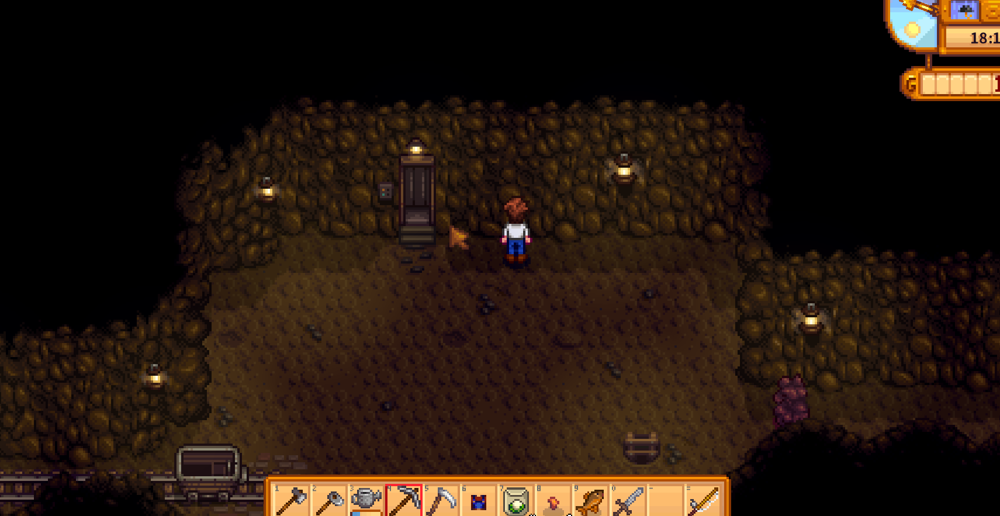

Quick answers (read this first)
- Go after farm chores, not instead of them.
- Bring a weapon + pickaxe + at least one snack.
- Elevators unlock on milestone floors—use them so you do not restart from floor 1 every visit.
- Rainy days are great mine days (crops already watered by rain).
- Leave when the energy bar is low; Exhausted underground is how Year 1 farmers faint with full pockets.
Who this is for (and who should skip)
Use this if the mountain cave feels scary, you keep dying to slimes, or you never remember to bring food. Our Year 1 save treated the mines like a boss fight on day four—we learned quickly that short trips beat heroic marathons.
Skip or skim if you already farm Skull Cavern for prismatic shards. This is early ladder progress and elevator unlocks, not endgame ore spreadsheets or combat min-max guides.
Version note (Stardew Valley 1.6): Floor layouts in the mines remain procedurally generated each visit. Elevator milestones, ore nodes, and monster spawns follow the same broad rules as earlier patches—we teach trip structure and safety habits, not fabricated drop rates or loot tables.
From our Year 1 save:
- First trip with no food: slime fight plus mining emptied the bar—we passed out and lost part of the haul.
- Unlock the next elevator milestone when you reach it (confirm floor numbers in-game), then use the elevator next visit instead of repeating early ladders.
- Don’t push “one more floor” into Exhausted. Leave while you can still walk home with geodes intact.
Pros & cons of early mine trips
| Details | |
|---|---|
| Pros | Copper and coal for tools/furnace; geodes for museum; combat practice; rainy-day productivity. |
| Cons | Burns energy fast; inventory fills with stone; easy to ignore the farm. |
| Use when | Patch is watered and you still have half a bar + food. |
| Skip when | Exhausted, no food, or tomorrow’s watering is already at risk. |
Personal tips from our Year 1 save
Our first successful mine day happened on rain because we skipped watering and had stamina left for rocks toward the first elevator milestone.
Sword on slot one, pickaxe on slot two—number-key swaps beat opening inventory when slimes appeared. Trash common stone each floor so copper and geodes do not get dropped by accident.
Interactive checklist
Tick as you play. Saved in this browser only.
Safe to skip
- Clearing every rock on a floor when a ladder already appeared.
- Staying for “one more floor” at 1% energy.
- Selling every geode before checking the museum.
- Buying cart ore instead of mining when you still enjoy the loop.
- Rushing to the bottom of the mines in Year 1 when your farm still needs daily care.
Decision table: stay or leave?
| You notice… | Do this | Avoid |
|---|---|---|
| Ladder down + healthy energy | Take it; keep pushing elevators | Clearing the whole floor for perfection |
| Inventory full of stone | Trash/sell stone; keep ore, geodes, unique finds | Dropping copper by accident |
| Bar low, food gone | Elevator out or climb up; walk home | Fighting another slime pack |
| Found elevator milestone | Celebrate, optionally reset to farm | Ignoring it and dying anyway |
Comparison table: what to bring
| Item | Why bring it | Skip when |
|---|---|---|
| Pickaxe | Break rocks, find ladders | Never—this is the whole trip |
| Sword | Slimes and bats block paths | You are doing a pure mining speedrun and dodging everything |
| Food (1–3 pieces) | Heal mid-floor; prevent Exhausted | You plan a five-minute in-and-out on floor 1 only |
| Empty inventory space | Room for ore, geodes, artifacts | Your bag is full of crops you forgot to ship |
Real screenshots from our Year 1 save

Game screenshot © ConcernedApe — used for guide commentary

Game screenshot © ConcernedApe — used for guide commentary

Game screenshot © ConcernedApe — used for guide commentary
How to run a short mine day (operations)
Eight steps that kept our Year 1 farmer alive and the farm profitable:
- Complete the morning farm loop first. Water crops (unless rain handled it), feed animals, grab shipped goods.
- Pack food on the toolbar alongside sword and pickaxe. Foraged snacks work; Saloon meals work better if you can afford them.
- Enter the mines from the northeast mountain entrance when your energy bar is at least half full.
- Break rocks toward ladders and elevator shafts. Fight only monsters that block your path—kiting past slimes saves time and HP.
- Eat when the energy bar dips into yellow, not after it hits zero. Exhausted underground often means passing out and losing part of your haul.
- Take every ladder down while energy and food remain. Push for the next elevator milestone if the floor feels manageable.
- Exit via elevator or stairs when food runs out, inventory is full of junk stone, or the clock approaches late evening.
- Optional town loop: Clint for geodes, Gunther for museum donations, then home to sleep. Tomorrow’s crops matter more than one extra floor tonight.
Common mistakes
- No food. The mines punish optimism. Even one salmonberry or field snack beats zero healing items.
- Skipping watering to “make progress.” Dead crops cost more than one floor of stone. Mine after chores, not instead of them.
- Hoarding stone forever. Common stone crowds out copper, coal, geodes, and artifacts. Dump or sell it aggressively in Year 1.
- Ignoring the sword. Mining with the pickaxe while slimes chew you is slow pain. Swap to the sword, clear the threat, swap back.
- Never unlocking elevators. Milestone floors save entire floors of repeated work. If you reach one, celebrate—it changes every future visit.
Alternative variations
- Rain-only miner: Mines mainly on rainy days; sunny days stay farm-first. Simple rule, zero guilt.
- Museum miner: Priority keep geodes and artifacts; sell junk stone aggressively; donate new finds same day.
- Combat-shy: Shorter trips, extra food, leave at the first bad slime swarm. Depth comes later with better gear and skill.
FAQ
When should I first enter the mines?
After you can water a small crop patch without panic—often mid-Spring in a typical save. Earlier is fine if you bring food and treat the trip as a quick scout, not a deep dive.
What do I do with geodes?
Take them to Clint at the blacksmith to crack open. Donate new minerals and artifacts to Gunther at the museum before selling duplicate results.
Do I need better tools first?
Basic tools work for early floors. Upgrade pickaxe and other tools when you have copper bars and enough gold—not before your daily crop loop feels stable.
What happens if I pass out in the mines?
You wake up with less energy and lose some gold and items depending on what you were carrying. It is recoverable but annoying—leaving early beats gambling your haul.
Are rainy mine days actually better?
Rain does not buff mining itself. Rain frees the time and energy you would spend watering, which makes the same mine trip easier to fit into your day.
Next steps / related pages
Unofficial fan guide. Not affiliated with ConcernedApe.